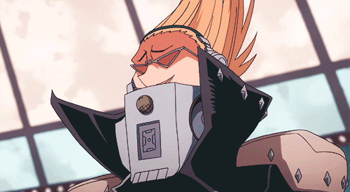

Su informacion principal
Nombre: Hizashi Yamada

Quirk: Voz
El Quirk de Present Mic le permite incrementar el volumen de su voz, dándole la habilidad de crear sonidos altos y agudos
Wiki con informacion mas detallada de Present Mic
El Quirk de Present Mic le permite incrementar el volumen de su voz, dándole la habilidad de crear sonidos altos y agudos
Wiki con informacion mas detallada de Present MicAtaque de largo alcance que hace que Present Mic dispare una onda de sonido.
Aumenta su tamaño gradualmente mientras mas lejos va, pero disminuye su daño.
Ataque que hace que Present Mic libere una onda de sonido de corto alcance pero grande que al impactar
con un enemigo lo stuneara por un corto periodo de tiempo y lo dejara con el efecto de "Ensordecimiento" que no lo dejara esuchar nada por un tiempo.
Manten pulsado para lanzar ondas de sonido continuas con un gran alcance, pero sin
el efecto de "Ensordecimiento".
Habilidad que hace que Present Mic realice un puño con gran daño en forma de dash hacia un enemigo.
Sube su daño considerablemente
cuando tengas entre 1 o 2 compañeros derrotados.
Coloca una radio en el suelo y al utilizar la habilidad especial Alpha o Beta la radio la hara tambien hacia la direccion en que lo dispares. (En pocas palabras duplica tus ataque de la Alpha y Gamma, asi haciendo un daño mas grande)
| Habilidad | Daño | Cargas |
|---|---|---|
| Alpha | 70 | 8 |
| Beta | 100 | 2 |
| Gamma | 140 | 3 |
| Especial | 0 | 3 |